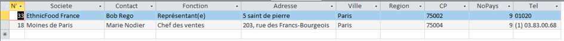
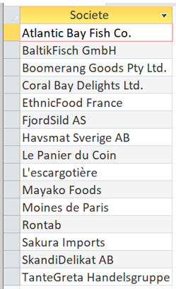
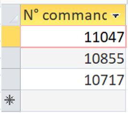
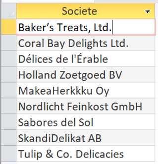
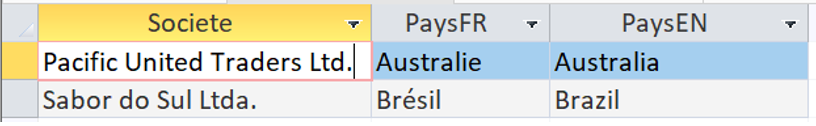
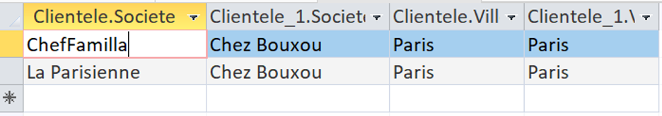
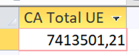
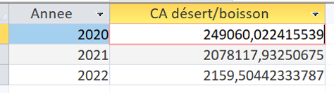
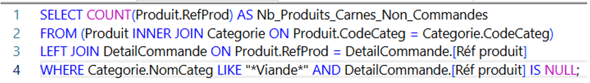
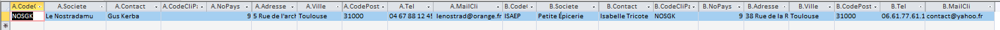

Table des matières
Questions
Question a)
Contexte :
L’entreprise peut se demander si elle doit créer un nouveau hangar à Paris, pour ce faire, elle va vérifier le nombre de clients et quels clients sont à Paris.
SELECT * FROM Clientele
WHERE Ville = "Paris"
ORDER BY Societe;
Résultat :

Question b)
Contexte :
L’entreprise souhaiterait connaître des produits américains que l’on pourrait regrouper pour faire des « box » pour les fans de la culture américaine.
SELECT NomProd, CoutAchat, Societe, Ville FROM Produit
INNER JOIN (
Fournisseur
INNER JOIN Pays ON Fournisseur.NoPays = Pays.NoPays
) ON Produit.NoFour = Fournisseur.NoFour
WHERE Pays.PaysFR = "Etats-Unis" AND CoutAchat < 25;
Résultat :
![La requête renvoie la liste des 8 produits suivants avec leur coût d'achat, leur fournisseur et la ville associée :
Grandma's Boysenberry Spread (20,83 €) fourni par Miss Ruby's Kitchen à Ann Arbor
Sasquatch Ale (11,67 €), Steeleye Stout (15,00 €) et Laughing Lumberjack Lager (11,67 €) fournis par Grizzly Hopworks Co. à Bend
Boston Crab Meat (15,33 €) et Jack's New England Clam Chowd (8,04 €) fournis par Atlantic Bay Fish Co. à Boston
Louisiana Fiery Hot Pepper Sauc (17,54 €) et Louisiana Hot Spiced Okra (14,17 €) fournis par Bayou pice Traders à New Orleans](Images/SAE1b.png)
Question c)
Contexte :
L’entreprise souhaiterait connaitre les viandes et poissons de luxe pour fournir un restaurant étoilé.
SELECT * FROM Produit
INNER JOIN Categorie ON Produit.CodeCateg = Categorie.CodeCateg
WHERE (NomCateg = "Poissons et fruits de mer" OR NomCateg = "Viandes") AND CoutAchat > 50;
Résultat :
![La requête renvoie les 7 produits suivants appartenant aux catégories « Viandes » ou « Poissons et fruits de mer » :
Mishi Kobe Niku (80,83 €) fourni par Sakura Imports en Japon (Viandes)
Thüringer Rostbratwurst (103,16 €) fourni par TanteGreta Handelsgruppe en Allemagne (Viandes)
Perth Pasties (97,33 €) fourni par Boomerang Goods Pty Ltd. en Australie (Viandes)
Tourtière (56,21 €) et Pâté chinois (68,00 €) fournis par Le Panier du Coin au Canada (Viandes)
Carnarvon Tigers (52,08 €) fourni par Coral Bay Delights Ltd. en Australie (Poissons et fruits de mer)
Dea Surströmming (120,00 €) fourni par SkandiDelikat AB en Suède (Poissons et fruits de mer)](Images/SAE1c.png)
Question d) et e)
Contexte :
L'entreprise souhaiterait connaitre quels fournisseurs proposent de la viande et du poisson.
SELECT DISTINCT Fournisseur.Societe
FROM Fournisseur INNER JOIN Produit ON Fournisseur.NoFour = Produit.NoFour
WHERE (((Produit.CodeCateg) = 6)) OR (((Produit.CodeCateg) = 8));
Résultat :

Question f)
Contexte :
L'entreprise souhaiterait connaitre les produits conditionnés dans du carton ou dans du verre.
SELECT DISTINCT Produit.NomProd
FROM Produit
WHERE (((Produit.QteParUnit) LIKE "*carton*")) OR (((Produit.QteParUnit) LIKE "*verre*"));
Résultat :
![Les produits conditionnés en carton ou en verre sont :
Carnarvon Tigers, Chocolade, Fløtemysost, Gnocchi di nonna Alice, Gorgonzola Telino, Gravad lax, Gudbrandsdalsost, Gustaf's Knäckebröd, knäckebröd Kala, Longlife Tofu, Mascarpone Fabioli, Maxilaku, Mishi Kobe Niku, Mozzarella di Giovanni, Nord-Ost Matjeshering, NuNuCa Nuß-Nougat-Creme, Queso Cabrales, Queso Manchego La Pastora, Raclette Courdavault, Ravioli Angelo, Røgede sild, Singaporean Hokkien Fried Mee, Spegesild, Tofu, Tunnbröd et Uncle Bob's Organic Dried Pears.](Images/SAE1f.png)
Question g)
Contexte :
Un client souhaite savoir si ses commandes ont bien été passés.
SELECT TOP 3 * FROM Commande
INNER JOIN Clientele ON Commande.CodeCli = Clientele.CodeCli
WHERE Contact = "Max Deschamps"
Résultat :

Question h)
Contexte :
L'entreprise souhaiterait connaitre les fournisseurs ne proposent que des desserts.
SELECT F.Societe, F.NoFour FROM Fournisseur F
WHERE EXISTS (
SELECT * FROM Produit
INNER JOIN Categorie ON Produit.CodeCateg = Categorie.CodeCateg
WHERE NomCateg = "Desserts" AND Produit.NoFour = F.NoFour
)
AND NOT EXISTS (
SELECT * FROM Produit
INNER JOIN Categorie ON Produit.CodeCateg = Categorie.CodeCateg
WHERE NomCateg <> "Desserts" AND Produit.NoFour = F.NoFour
)
Résultat :

Question i)
Contexte :
L'entreprise souhaiterait connaitre quels fournisseurs hors France n’ont pas encore de produits au catalogue de Kdou.
SELECT * FROM Fournisseur F
INNER JOIN Pays P ON F.NoPays = P.NoPays
WHERE P.PaysFR <> "France" AND NOT EXISTS
(
SELECT * FROM Produit Prod
WHERE Prod.NoFour = F.NoFour
)
Résultat :

Question j)
Contexte :
L'entreprise souhaiterait connaitre quels sont les couples de clients qui sont situés à Paris pour des raisons d'optimisation des livraisons.
SELECT * FROM Clientele A
INNER JOIN Clientele B
ON A.CodeCli = B.CodeCliPart
WHERE A.Ville = "Paris" AND B.Ville = "Paris"
Résultat :

Requête 2
Contexte :
En liens avec l'origine des produits, KDou souhaiterait connaitre le chiffre d'affaire total généré à ce jour avec les fournisseurs de l'UE.
SELECT Sum([DetailCommande]![Quantité]*[Produit]![CoutAchat]*(1+[Categorie]![CoefMarge])*(1-[DetailCommande]![Remise (%)])) AS [CA Total UE] FROM Pays
INNER JOIN (Fournisseur INNER JOIN (Categorie INNER JOIN (Produit INNER JOIN DetailCommande ON Produit.RefProd = DetailCommande.[Réf produit]) ON Categorie.CodeCateg = Produit.CodeCateg) ON Fournisseur.NoFour = Produit.NoFour) ON Pays.NoPays = Fournisseur.NoPays
WHERE (((Pays.UE) Is Not Null));
Résultat :

Requête 3
Contexte :
En liens avec la santé, KDou souhaiterait connaitre le chiffre d'affaire annuel généré par le total des ventes pour les catégories desserts ou boissons.
SELECT Year(Commande.DateCde) AS Annee, Sum([DetailCommande]![Quantité]*[Produit]![CoutAchat]*(1+[Categorie]![CoefMarge])*(1-[DetailCommande]![Remise (%)])) AS [CA désert/boisson]
FROM Commande INNER JOIN ((Categorie INNER JOIN Produit ON Categorie.CodeCateg = Produit.CodeCateg) INNER JOIN DetailCommande ON Produit.RefProd = DetailCommande.[Réf produit]) ON Commande.[N° commande] = DetailCommande.[N° commande]
WHERE (((Produit.CodeCateg)=1 OR (Produit.CodeCateg)=3))
GROUP BY Year(Commande.DateCde);
Résultat :

Requête 4
Contexte :
En liens avec l'offre commerciale, KDou souhaiterait connaitre le nombre de produits carnés non commandés actuellement.
SELECT COUNT(Produit.RefProd) AS Nb_Produits_Carnes_Non_Commandes
FROM (Produit INNER JOIN Categorie ON Produit.CodeCateg = Categorie.CodeCateg) LEFT JOIN DetailCommande ON Produit.RefProd = DetailCommande.[Réf produit]
WHERE Categorie.NomCateg LIKE "*Viande*" AND DetailCommande.[Réf produit] IS NULL;
Résultat :

Requête 5
Contexte :
En liens avec le partenariat client, KDou souhaiterait connaitre s'il y a des clients pilotes d'un réseau partenaire ayant autant de commandes ques les clients partenaires.
SELECT * FROM Clientele A
INNER JOIN Clientele B ON B.CodeCliPart = A.CodeCli
WHERE (SELECT COUNT(*) FROM Commande WHERE A.CodeCli = Commande.CodeCli) = (SELECT COUNT(*) FROM Commande WHERE B.CodeCli = Commande.CodeCli)
Résultat :
